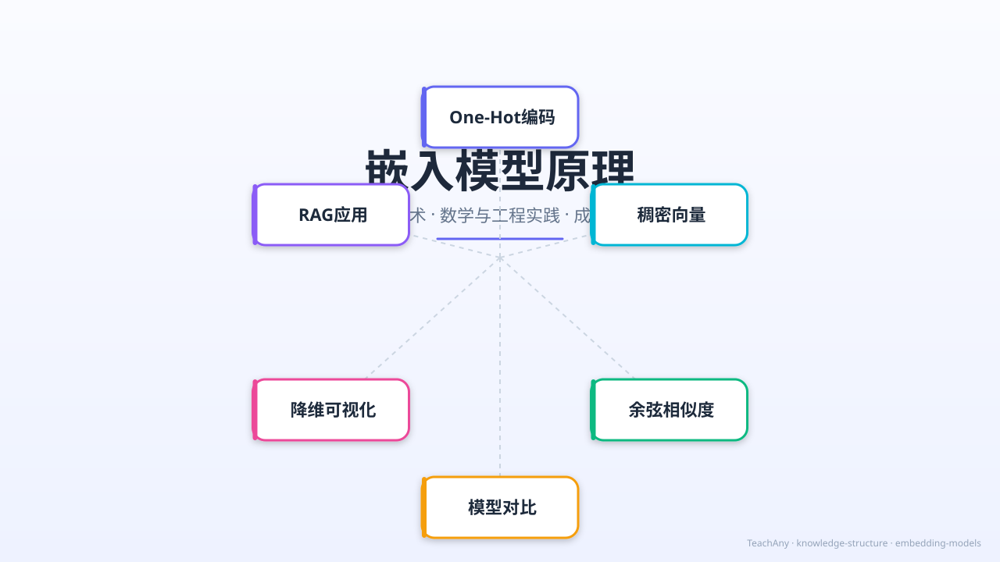

Gallery
v1.0.0 · skill v7.18.0
计算机怎么理解"猫"和"狗"这两个词的意思相近？

选一个你关心的问题，后面的内容会围绕它展开。
选择或输入后，本课会围绕你的问题展开。
在开始之前，先测测你的直觉。以下哪个说法是正确的？
已经知道：计算机只能处理数字，所以文本必须转换成数值表示。
但是问题是：最简单的One-Hot编码把每个词表示为一个N维向量（N=词汇量），除了一个位置是1其余全0。"猫"和"狗"的One-Hot向量之间没有任何数学联系。
所以这一段要解决：稠密向量（Dense Embedding）用较少维度（如768维）的连续值，让语义相近的词在向量空间中靠得更近。
猫 → [1,0,0,0,...]（5万维）
狗 → [0,1,0,0,...]（5万维）
cos(猫,狗) = 0 —— 完全不相似
无法捕捉语义关系
猫 → [0.12, -0.34, 0.87, ...] (768维)
狗 → [0.15, -0.28, 0.82, ...] (768维)
cos(猫,狗) ≈ 0.85 —— 高度相似！
语义相近 → 向量方向相近
在嵌入空间中，我们用余弦相似度来衡量两个向量"方向"的接近程度：
cos(A, B) = (A · B) / (||A|| × ||B||)
取值范围 [-1, 1]，越接近1表示语义越相似
猫 vs 狗 → 0.85
Python vs JavaScript → 0.78
深度学习 vs 神经网络 → 0.92
猫 vs 汽车 → 0.12
Python vs 篮球 → 0.05
深度学习 vs 烹饪 → 0.08
输入两个词，使用模拟的嵌入向量计算余弦相似度。在实际系统中，你会调用真实的嵌入模型API。
工程实践中的关键决策：根据任务选对嵌入模型。
| 模型 | 维度 | 最大Token | 中文支持 | 性价比 | 适用场景 |
|---|---|---|---|---|---|
| text-embedding-3-small | 512 | 8191 | 良好 | 极高 | 通用RAG、搜索 |
| text-embedding-3-large | 3072 | 8191 | 优秀 | 中等 | 高精度检索、聚类 |
| bge-large-zh-v1.5 | 1024 | 512 | 最佳 | 免费 | 中文为主场景 |
| jina-embeddings-v3 | 1024 | 8192 | 优秀 | 免费 | 多语言、长文本 |
| Cohere embed-v3 | 1024 | 512 | 中等 | 付费 | 企业级多语言 |
💡 选择建议：
• 新手首选 text-embedding-3-small：低成本、易接入、效果足够
• 中文为主选 bge-large-zh：开源免费，MTEB中文榜单领先
• 长文档/多语言选 jina-embeddings-v3：8192 token窗口，支持89种语言
• 极致精度选 text-embedding-3-large：3072维，但成本高5倍
嵌入向量通常是256-3072维的，人类无法直接"看到"。降维算法将它们映射到2D/3D：
线性方法，保留全局结构
速度：快
适用：快速探索、保留距离比例
局限：非线性关系可能丢失
非线性方法，保留局部结构
速度：慢
适用：发现聚类、可视化语义群
局限：全局距离可能失真
示意：2D降维后的词向量空间。同色点表示语义相近的词聚类在一起。
嵌入模型是现代NLP的基础设施。以下是三个核心应用场景：
用户查询 → 嵌入模型 → 查询向量 → 在ChromaDB中搜索最相近的文档块向量 → 返回top-k结果。嵌入质量直接决定检索召回率。
传统关键词搜索："猫粮"找不到"宠物食品"。语义搜索通过嵌入，将查询和文档映射到同一空间，cos("猫粮", "宠物食品") ≈ 0.8 → 成功匹配。
将文本嵌入后，相似主题的文档在向量空间中自然聚集。可以用K-Means或DBSCAN进行无监督聚类，或用嵌入向量作为分类器的输入特征。
一个API返回 embedding 向量 v = [0.6, 0.8]，另一个返回 w = [0.8, 0.6]。这两个向量的余弦相似度是多少？（提示：cos = 点积/(||v||×||w||)）
你在搭建一个中文法律文档的RAG系统，文档平均每篇5000字。以下嵌入模型选择和参数配置中，最佳方案是？
我们回答了一开始的问题：计算机通过嵌入模型把词语映射到高维向量空间，语义相近的词在这个空间中靠得更近。余弦相似度量化了这种语义距离——"猫"和"狗"的相似度远高于"猫"和"汽车"。
本节点的前置、后续和同域知识。